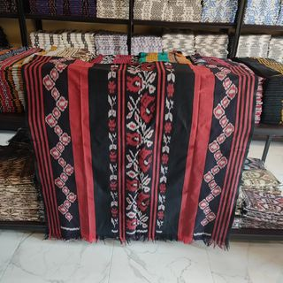
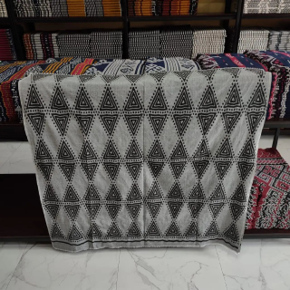
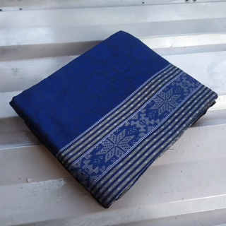
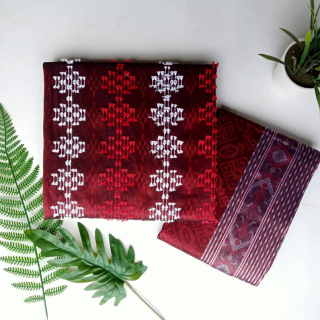

Tenun Troso Etnik
Tenun Troso adalah jenis kain tradisional yang dihasilkan oleh masyarakat Troso, sebuah desa di Kecamatan Tahunan, Jepara, Jawa Tengah. Kain ini terkenal karena keindahan motif dan kerumitan tenunannya.
Album
Tenun Blanket
Tenun Bulu

Tenun Removen
Tenun Baron
Tenun Bulu Baron
